วิธีดู: คลิกการ์ดเพื่อเปิดหน้าจอ แล้วคลิกใช้งานได้จริง (ปุ่ม เมนู ฟอร์ม และขั้นตอนงาน) · เปิดบนเครื่องคอมพิวเตอร์จะเห็นครบที่สุด ส่วน Screen 19 ออกแบบสำหรับมือถือ/Tablet · ต้องต่อเน็ตเพื่อโหลดฟอนต์และตัวช่วยแสดงผล
ข้อมูลทั้งหมดเป็นตัวอย่าง ยกเว้นตัวเลขความคืบหน้าผลิต/ติดตั้งในหน้า Production & Install ที่อ้างอิงไฟล์จริง ณ 12 พ.ย. 2569 · ปุ่มบันทึกจะไม่ส่งข้อมูลไปที่ไหน
ข้อมูลทั้งหมดเป็นตัวอย่าง ยกเว้นตัวเลขความคืบหน้าผลิต/ติดตั้งในหน้า Production & Install ที่อ้างอิงไฟล์จริง ณ 12 พ.ย. 2569 · ปุ่มบันทึกจะไม่ส่งข้อมูลไปที่ไหน
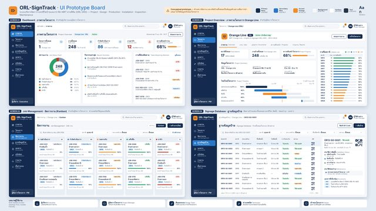
ORL-SignTrack UI Presentation Board
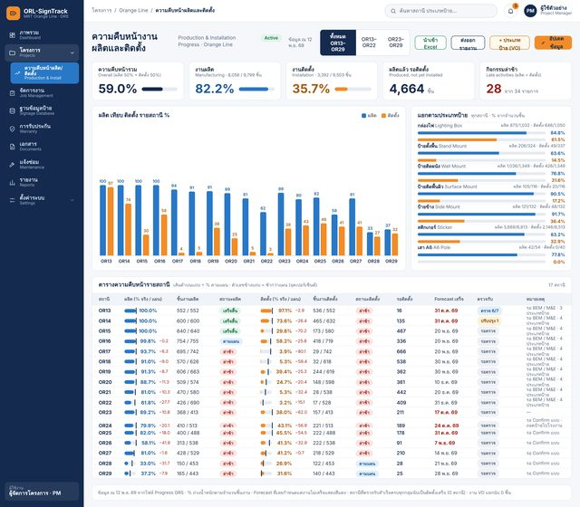
Screen 05 · Production & Installation Progress
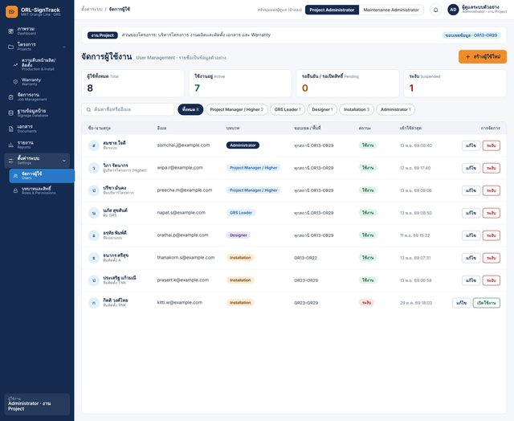
Screen 06 · Users & Permissions (Admin)
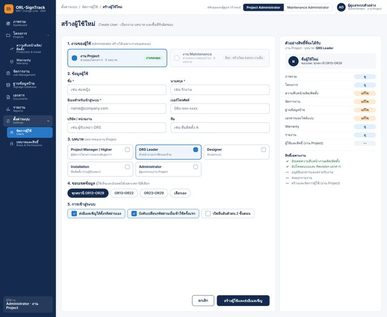
Screen 07 · Create User
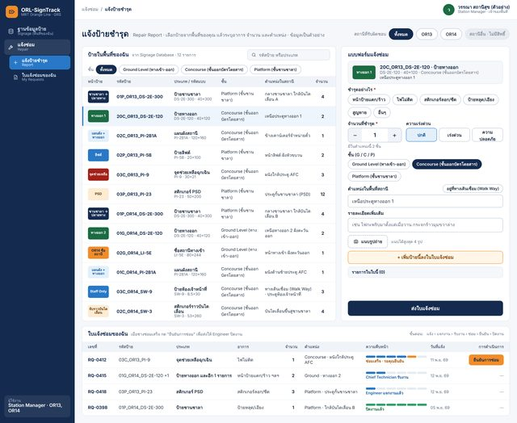
Screen 08 · Station Manager Repair Report
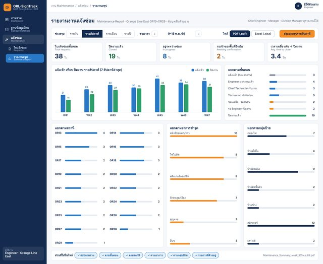
Screen 09 · Maintenance Summary Report
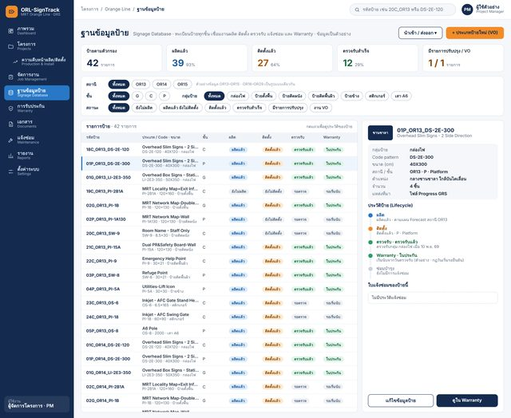
Screen 10 · Signage Database
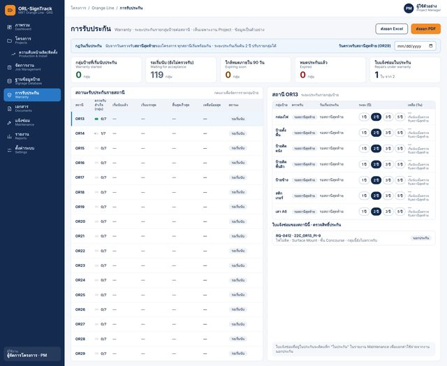
Screen 11 · Warranty
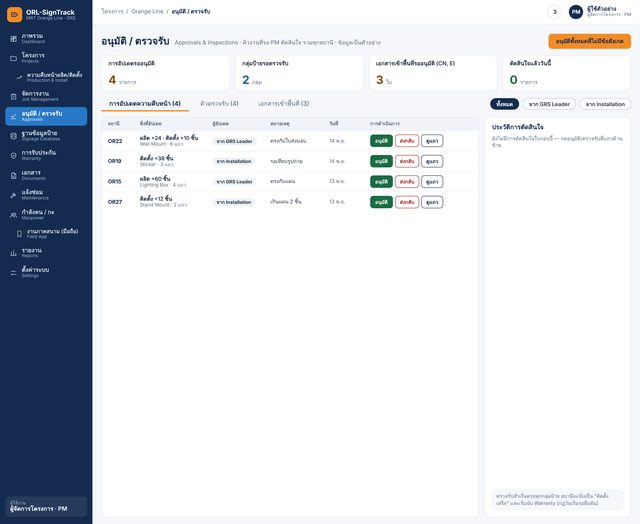
Screen 12 · Approvals & Inspection
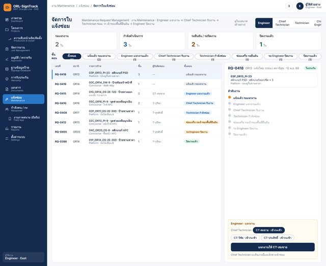
Screen 13 · Repair Management (Maintenance)
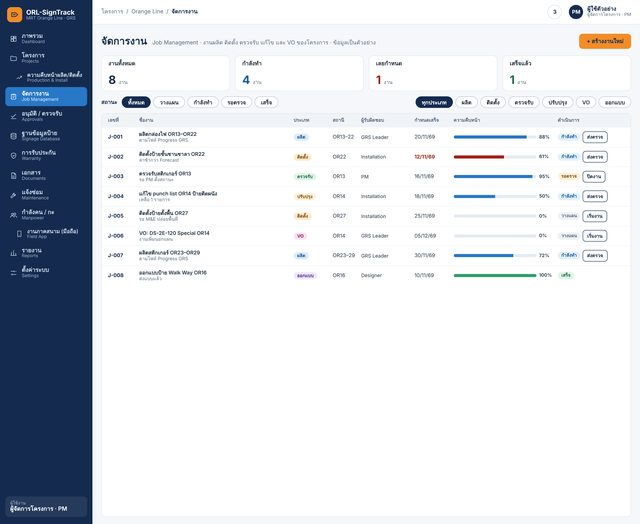
Screen 14 · Job Management
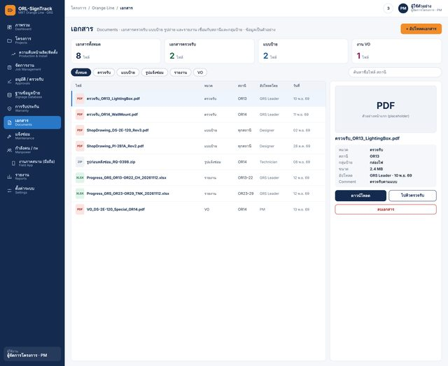
Screen 15 · Documents
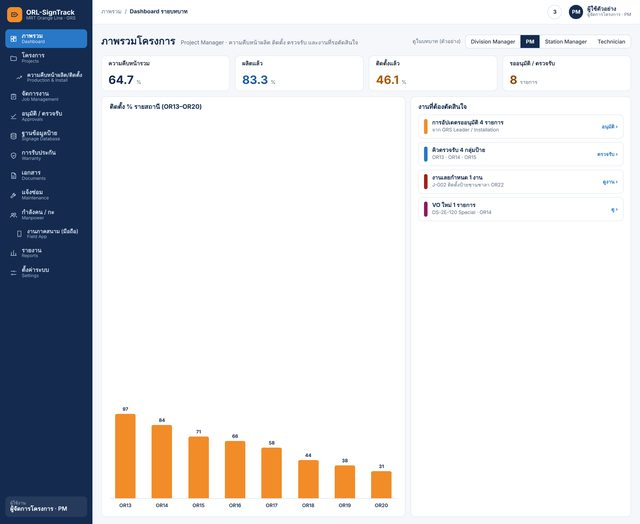
Screen 16 · Role-based Dashboard
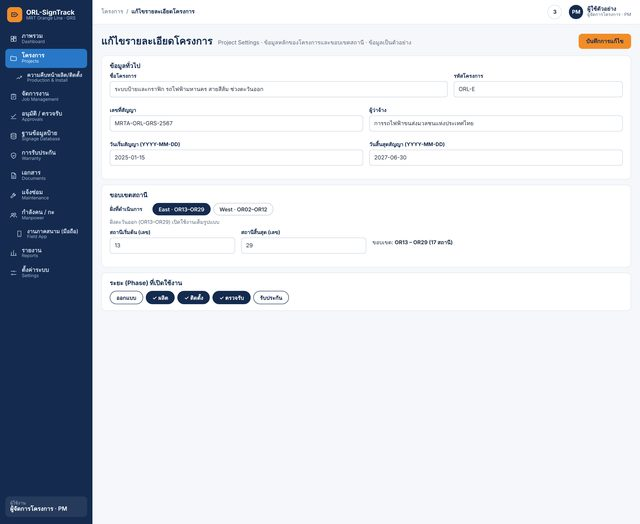
Screen 17 · Project Settings
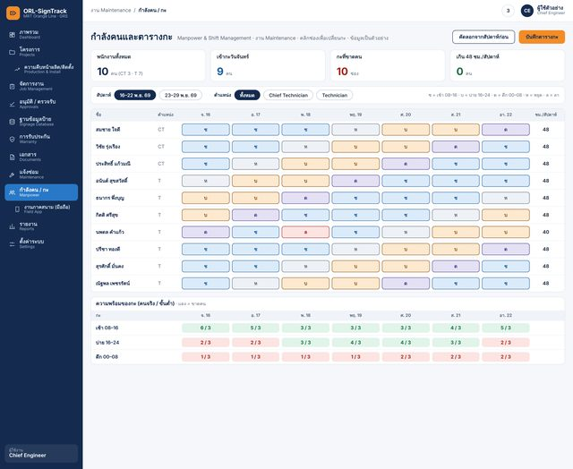
Screen 18 · Manpower & Shift
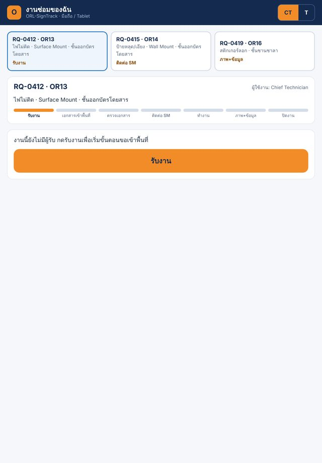
Screen 19 · Field App (Mobile / Tablet · CT, T)